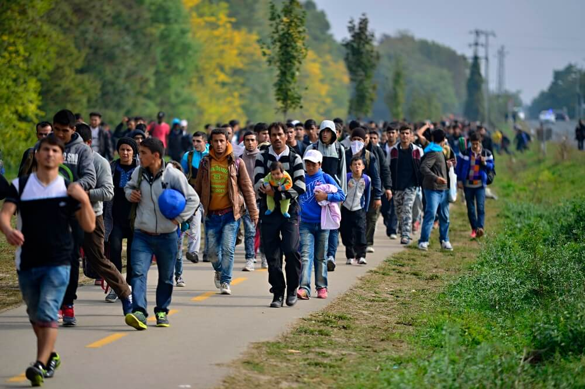

Dia do Refugiado
20 de Junho
O Dia Mundial do Refugiado, celebrado em 20 de junho, é uma ocasião importante para refletir sobre a difícil jornada e os desafios enfrentados pelas pessoas refugiadas em todo o mundo. É uma data dedicada a aumentar a conscientização sobre a situação desses indivíduos e promover a solidariedade global em relação aos refugiados. Milhões de pessoas são forçadas a deixar seus países de origem todos os anos devido a conflitos, perseguições, violações de direitos humanos e outras situações de risco. Essas pessoas, muitas vezes, enfrentam condições extremamente precárias, incerteza e a falta de acesso a necessidades básicas, como abrigo, alimentação e cuidados médicos. O Dia do Refugiado é uma oportunidade para honrar a coragem e a resiliência dos refugiados, reconhecendo suas histórias de superação e esperança. É também uma ocasião para destacar a importância da proteção dos direitos humanos e para pedir ações concretas no sentido de oferecer ajuda e soluções duradouras para os refugiados. Além disso, o Dia do Refugiado visa promover a solidariedade e a inclusão. É um momento para celebrar a diversidade cultural que os refugiados trazem para as sociedades de acolhimento, enriquecendo-as com suas tradições, línguas e experiências únicas. Ao reconhecer e valorizar a contribuição dos refugiados, podemos construir comunidades mais acolhedoras e igualitárias. Neste dia, é importante lembrar que todos nós podemos fazer a diferença. Podemos oferecer apoio por meio de doações para organizações que trabalham diretamente com refugiados, oferecer nosso tempo como voluntários em abrigos e centros de acolhimento, ou advogar por políticas que protejam e garantam os direitos dos refugiados. O Dia Mundial do Refugiado nos convoca a agir em solidariedade e a tomar medidas para criar um mundo mais inclusivo, onde todas as pessoas possam viver com dignidade e segurança. Vamos nos unir e mostrar apoio aos refugiados, defendendo a justiça, a igualdade e o respeito pelos direitos humanos.
Como ajudar?
Há várias maneiras de ajudar os refugiados:
- Fazer doações para organizações humanitárias que atuam em apoio aos refugiados;
- Participar de programas de voluntariado em abrigos e centros de acolhimento;
- Advogar por políticas que promovam a inclusão e proteção dos direitos dos refugiados;
- Oferecer suporte emocional e apoio prático para refugiados em sua comunidade;
- Educando-se e conscientizando-se sobre a situação dos refugiados para combater a xenofobia e promover a empatia.
Conclusão
O Dia Mundial do Refugiado é uma oportunidade para mostrar solidariedade, compaixão e empatia em relação às pessoas refugiadas. Ao nos informarmos sobre a situação desses indivíduos, podemos ajudar a mudar percepções, combater preconceitos e criar um mundo mais inclusivo e acolhedor.